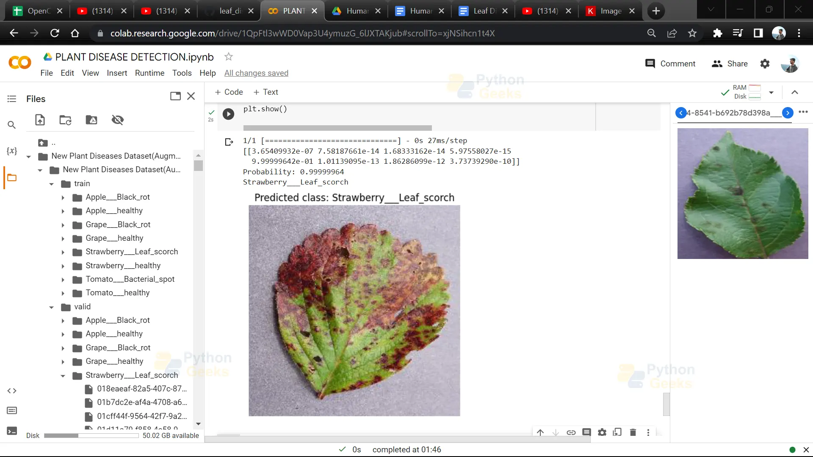
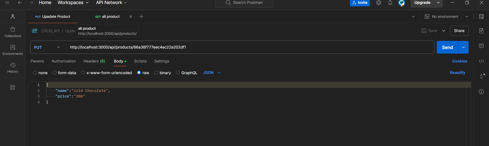
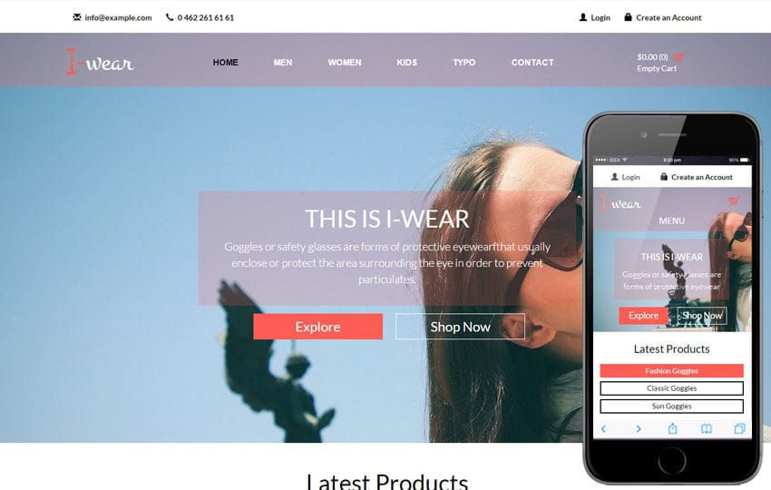

Projects
Plant Disease Detection Using CNN Model, Deep Learning:
Annotated and curated a dataset of thousands of plant images to train the deep learning model and Validated model performance, achieving high accuracy in disease detection tasks.
CRUD API using NodeJS, Express and MongoDB:
Developed CRUD API using Node.js, Express, and MongoDB, optimizing data management and enhancing application functionality for seamless user interaction.
Responsive Website Using Bootstrap
Started by setting up your project environment, including linking the Bootstrap CSS and JS files. ● Used Bootstrap's built-in components, such as navbars, cards, and buttons, to style each section. .
Commerce Website using Tailwind CSS and React

Developed responsive and visually appealing web applications by leveraging React Tailwind CSS's utility-first framework, ensuring rapid UI prototyping and consistent design.